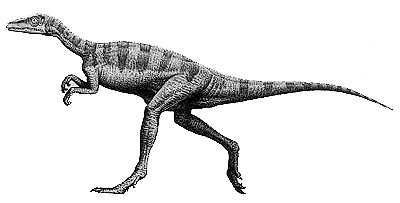
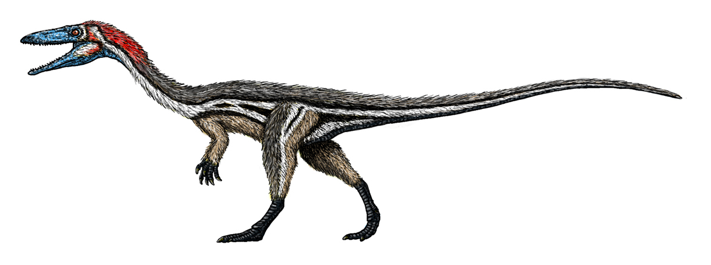
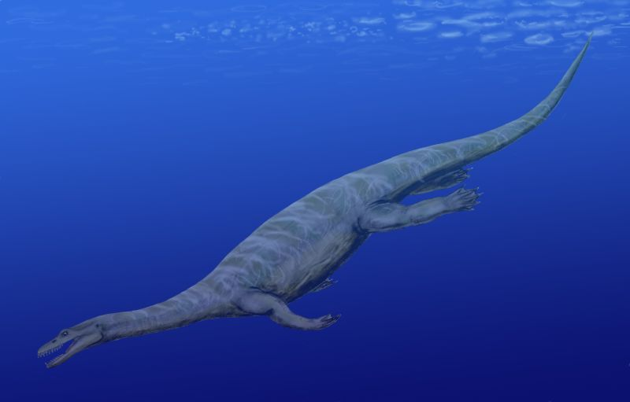

The Triassic Period was period where we have found Dinosour fossils from the longest time ago, and some famous species from this time are the Eoraptor and the Coelophysis. The Eoraptor is very important because it is the predecessor to many of the smaller predatorian therapods of the later periods, such as the Velociraptor and the Dilophosaurus
The Eoraptor was such an important creature because it is the oldest therapod that we have found so far, and this means that all of those famous one that we know today, like the Tyranosaurus Rex and the Spinosaurus all evolved from the Eoraptor or a creature very genetically similar to it. That also makes it the ancestor to smaller thereapods too.
 https://ucmp.berkeley.edu/diapsids/eoraptor.htmlThe Coelophysis was another early therapod similar to the Eoraptor, but it is not as old, so there are some differences to be noted. The Coelophysis is much bigger, and it has a larger head. This is because they evolved to become more of apex predators, and this eventually would create the therapods we know today.
The Nothosaurus was a marine reptile that lived a lot like the way seals live today: partially on land and partially in the water. They are one of the oldest marine reptiles we know of of their size(about 20ft), and they were very good predators for their time.
